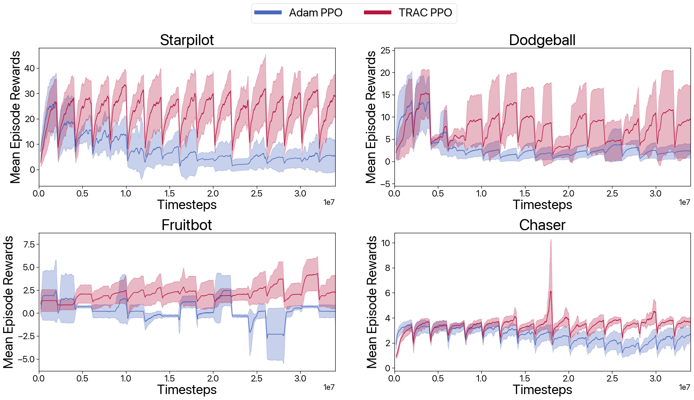

|
|
|
|
|
|
|
|
|
|
Arxiv |
Code & Experiments |
Colab |
A key challenge in lifelong reinforcement learning (RL) is the loss of plasticity, where previous learning progress hinders an agent's adaptation to new tasks. While regularization and resetting can help, they require precise hyperparameter selection at the outset and environment-dependent adjustments. Building on the principled theory of online convex optimization, we present a parameter-free optimizer for lifelong RL, called \(\textbf{TRAC}\), which requires no tuning or prior knowledge about the distribution shifts. Extensive experiments on Procgen, Atari, and Gym Control environments show that \(\textbf{TRAC}\) works surprisingly well—mitigating loss of plasticity and rapidly adapting to challenging distribution shifts—despite the underlying optimization problem being nonconvex and nonstationary.
In lifelong RL, a learning agent must continually acquire new knowledge to handle the nonstationarity of the environment. At first glance, there appears to be an obvious solution: given a policy gradient oracle, the agent could just keep running gradient descent nonstop. However, recent experiments have demonstrated an intriguing behavior called loss of plasticity [1,2,3,4]: despite persistent gradient steps, such an agent can gradually lose its responsiveness to incoming observations.


\(\textbf{TRAC}\) combines three parameter-free Online Convex Optimization (OCO) techniques: direction-magnitude decomposition, additive aggregation, and the \(\text{erfi}\) potential function. The algorithm starts with a base optimizer, \(\text{Base}\), and adjusts a scaling parameter, \( S_{t+1} \), in an online data-dependent manner. This parameter affects the update of \(\theta_{t+1}\) as shown:
\[ \theta_{t+1} = S_{t+1} \cdot \theta_{t+1}^\text{base} + (1 - S_{t+1}) \theta_\text{ref}. \]The decision rule for the tuner uses the \(\text{erfi}\) function to calculate \( s_{t+1} \) as follows:
\[ s_{t+1} = \frac{\epsilon}{(\text{erfi})(1/\sqrt{2})} (\text{erfi})\left(\frac{\sigma_t}{\sqrt{2v_t} + \epsilon}\right), \]
This rule applies the \(\text{erfi}\) function, an imaginary error function, to tune the scaling parameter based on the input \(\sigma_t\) and the running variance \(v_t\). Aggregating the outputs of tuners with different discount factors allows \(\textbf{TRAC}\) to adaptively scale based on algorithm performance without manual tuning.


Combining our proposed methods above, we get a consistent improvement in various VQ-based tasks, including generative modeling and image classification. The figure below is generated using MaskGIT* framework for CelebA. OPT refers to both alternating optimization + synchronized commitment loss. Refer to the main paper for additional results, including image classification.


(*Note: MaskGIT was trained without perceptual and discriminative loss to reduce training and memory overhead.)
>>> git clone https://github.com/minyoungg/vqtorch
>>> cd vqtorch
>>> pip install -e .
import torch
from vqtorch.nn import VectorQuant
# create VQ layer
vq_layer = VectorQuant(
feature_size=32, # feature dimension corresponding to the vectors
num_codes=1024, # number of codebook vectors
beta=0.98, # (default: 0.95) commitment trade-off
kmeans_init=True, # (default: False) whether to use kmeans++ init
norm=None, # (default: None) normalization for input vector
cb_norm=None, # (default: None) normalization for codebook vectors
affine_lr=10.0, # (default: 0.0) lr scale for affine parameters
sync_nu=0.2, # (default: 0.0) codebook synchronization contribution
replace_freq=20, # (default: 0) frequency to replace dead codes
dim=-1 # (default: -1) dimension to be quantized
).cuda()
# when using `kmeans_init`, a warmup is recommended
with torch.no_grad():
z_e = torch.randn(1, 32, 32, 3).cuda()
vq_layer(z_e)
# standard forward pass
z_q, vq_dict = vq_layer(z_e) # equivalent to above
print(z_q.shape)
>>> (1, 64, 64, 32)
Minyoung Huh would like to thank his lab members for helpful feedbacks. Minyoung Huh was funded by ONR MURI grant N00014-22-1-2740.
Website template edited from Colorful Colorization.
 Colab
Colab